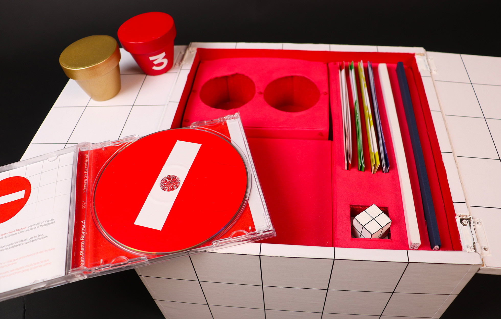
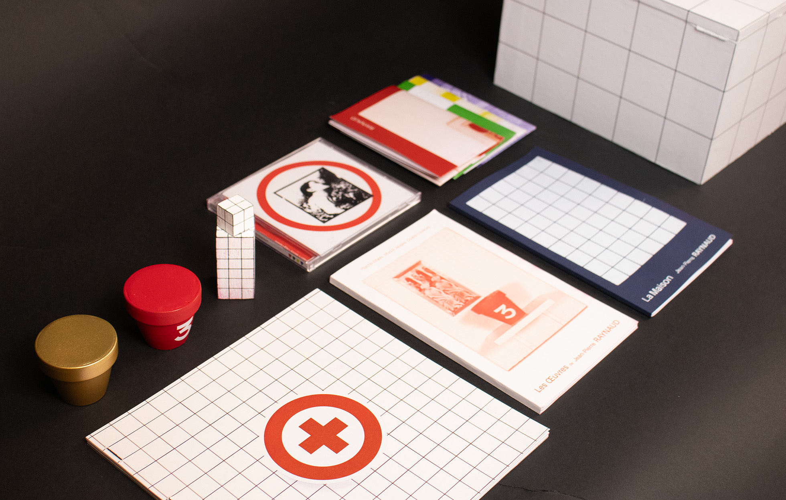
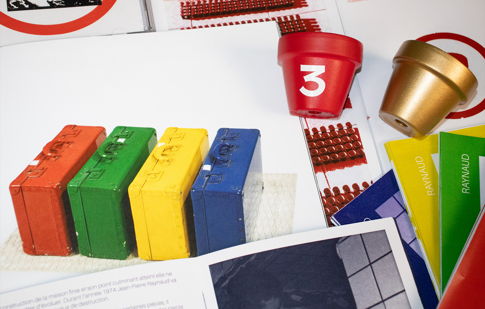
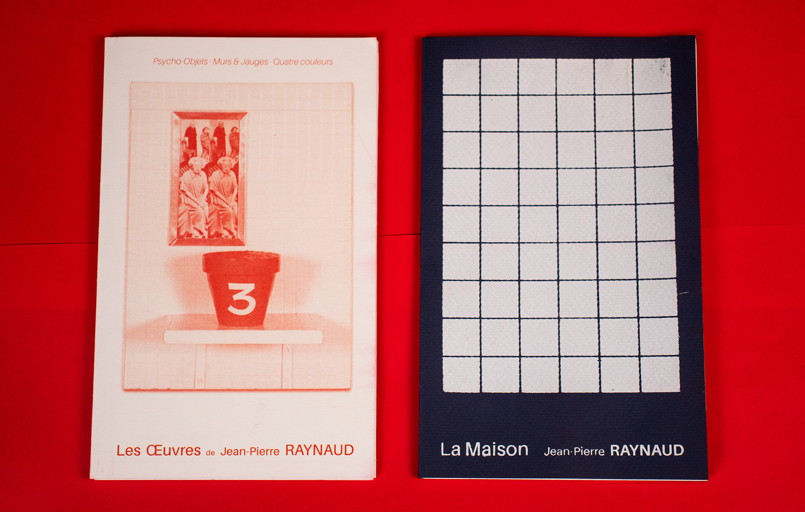
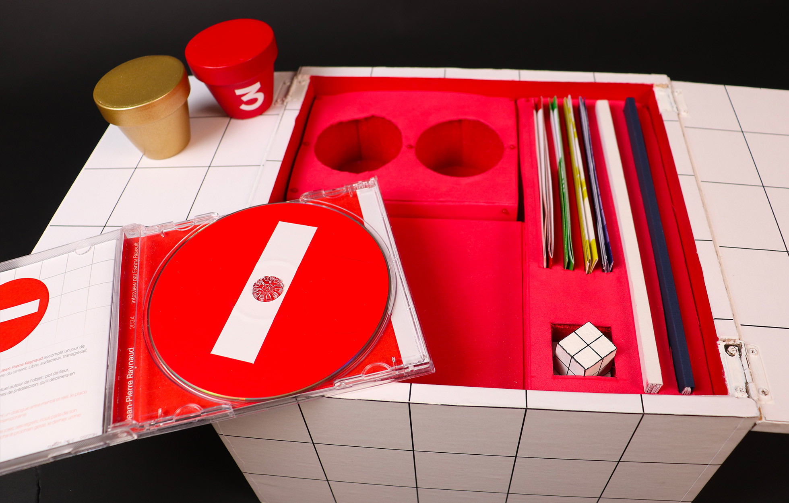
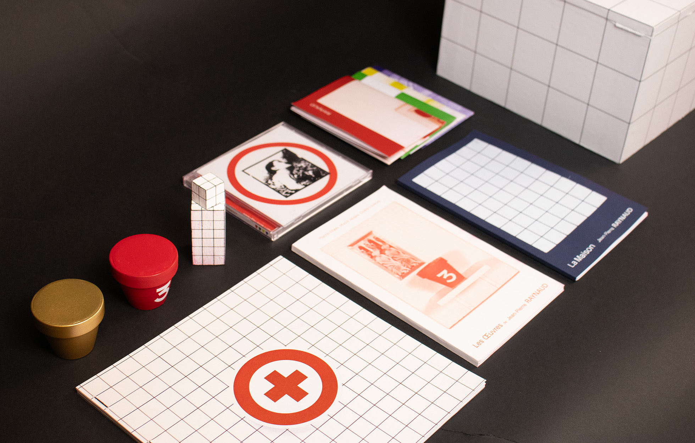
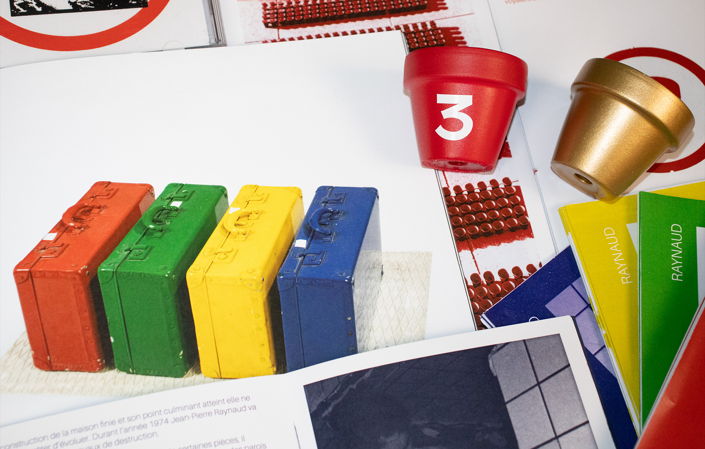
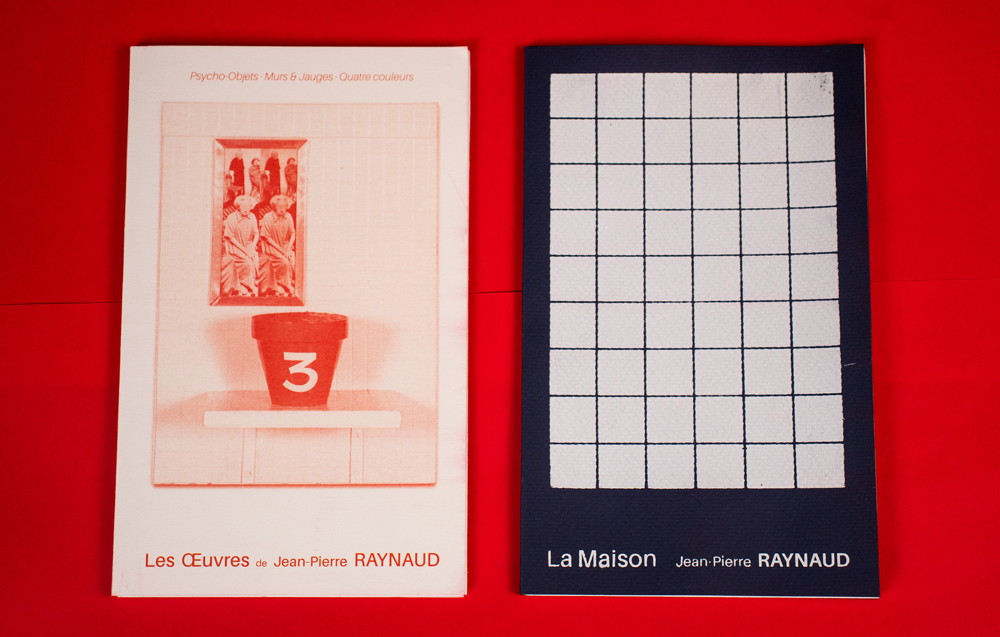

CONFECTION D'UN COFFRET D'ARTISTE — CONFECTION D'UN COFFRET D'ARTISTE —
CONFECTION D'UN COFFRET D'ARTISTE — CONFECTION D'UN COFFRET D'ARTISTE —
Ce coffret est un hommage au travail de l'artiste Jean-Pierre Raynaud, il mélange des productions éditoriales, des afficher, et des figurines à l'effigie de l'artiste.
Le coffret contient :
- Deux éditions à propos des œuvres et de la vie de Jean-Pierre Raynaud.
- Quatres affiches inspirées de sa série "Quatre couleurs".
- Un CD contenant une interview de l'artiste.
- Trois figurines représentant des oeuvres phares de l'artiste.
 






